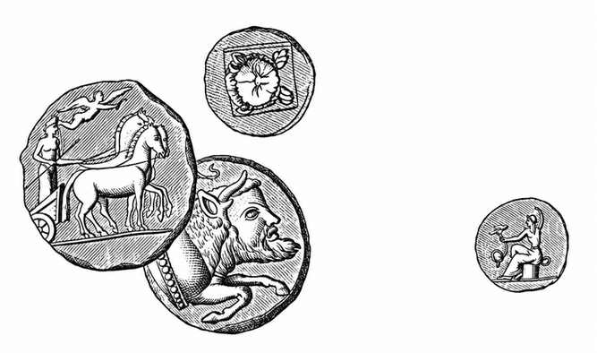

金钱（骑士） · Money (for Cavaliers)
骑士的起始金钱与装备 · Starting Money and Equipment for Cavaliers
骑士得到领主或骑士团支持，创建角色时拥有其他职业不易获得的资金和装备。具体数量与种类取决于角色的社会等级：

| 社会等级 | 起始金钱 | 起始装备 |
|---|---|---|
| 下中产阶层或更低的骑手 | 20–80 金币 | 盾牌、任意种类的剑、骑乘马。 |
| 中中产阶层骑手 | 20–80 金币 | 盾牌、匕首、阔剑或长剑、轻型战马。 |
| 上中产阶层骑手 | 20–80 金币 | 锁子甲、阔剑或长剑、骑枪、轻型战马。 |
| 下上层阶层骑士 | 70–180 金币 | 盾牌、板条甲（Plate Mail）、匕首、长剑或阔剑、骑枪、中型战马。 |
| 中上层阶层骑士 | 70–180 金币 | 盾牌、野战板甲（Field Plate）、匕首、长剑或阔剑、骑枪、重型战马。 |
| 上上层阶层骑士 | 130–180 金币 | 盾牌、全身板甲（Full Plate）、匕首、长剑或阔剑、钉头锤、骑枪、披皮革马甲的重型战马。 |
原书在下上层阶层骑士的金额后印有 `(1d12 + 6)`，在上上层阶层骑士的金额后印有 `(1d6 + 12)`；两式所得为 7–18、13–18，与印出的金币范围相差十倍。此处保留原金额范围，公式差异留待人工校勘。
马匹默认配有与骑士地位相应的笼头、挽具、马鞍及鞍袋。低于上层阶层的骑士仍须从0 级骑手开始，并由良好家族收留、为其配备侍从。